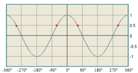

To graph the cosine function, we mark the angle along the horizontal x axis, and for each angle, we put the cosine of that angle on the vertical y-axis. The result, as seen above, is a smooth curve that varies from +1 to -1. It is the same shape as the cosine function but displaced to the left 90°. Curves that follow this shape are called 'sinusoidal' after the name of the sine function whose shape it resembles.
In the diagram above, drag the point A around in a circular path to vary the angle CAB. As you do so, the point on the graph moves to correspond with the angle and its cosine. (If you check the "progressive mode" box, the curve will be drawn as you move the point A instead of tracing the existing curve.)
As you drag the point A around notice that after a full rotation about B, the graph shape repeats. The shape of the cosine curve is the same for each full rotation of the angle and so the function is called 'periodic'. The period of the function is 360° or 2π radians. You can rotate the point as many times as you like. This means you can find the cosine of any angle, no matter how large. In mathematical terms we say the 'domain' of the cosine function is the set of all real numbers.
The range of a function is the set of result values it can produce. The cosine function has a range that goes from -1 to +1. Looking at the cosine curve you can see it never goes outside this range.

What if we were asked to find the inverse cosine of a number, let's say 0.5? In other words: what angle has a cosine of 0.5?If we look at the curve above we see four angles whose cosine is 0.5 (red dots). In fact, since the graph goes on forever in both directions, there are an infinite number of angles that have a cosine of a 0.5.
If you ask a calculator to find the arc cosine (cos-1 or acos) of a number, it cannot return an infinitely long list of angles, so by convention it returns just the first one. But remember, there are many others.